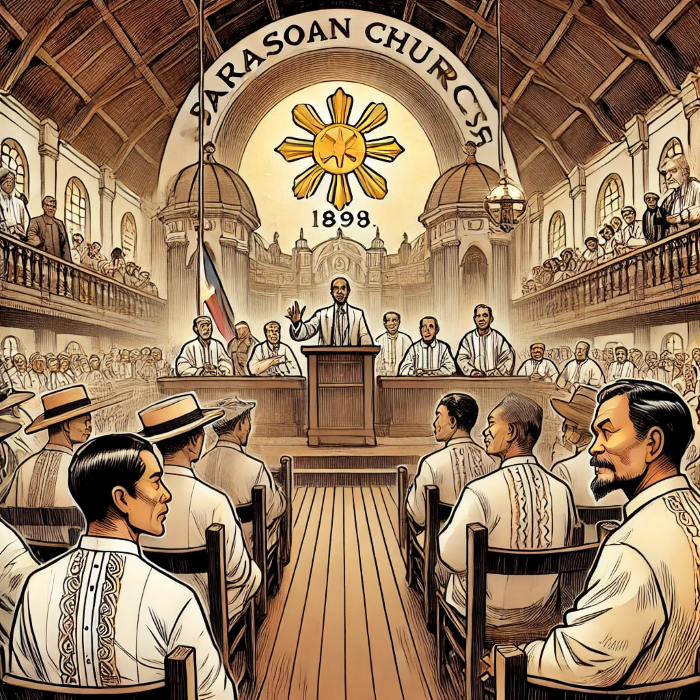

Heneral Luna
As the 19th century drew to a close, the Philippines stood on the brink of change. After centuries of colonial rule, Spain's power over the islands was finally fading. But instead of granting the Filipinos their hard-earned independence, Spain struck a secret deal. For a sum of $20,000,000, the Spanish agreed to sell the Philippines to a new foreign power—the United States. This agreement was sealed during the Treaty of Paris, though no one knew what this would mean for the Filipino people.

At the Barasoain Church in Malolos, tensions ran high. President Emilio Aguinaldo and his cabinet gathered to discuss the unsettling rise of American forces in the Philippines. Among the advisors, two members—Felipe Buencamino and Pedro Paterno—urged a diplomatic approach. They suggested forming an alliance with the Americans to avoid war. But their words struck a nerve in the room. Generals Antonio Luna and José Alejandrino, both staunch patriots, rejected the idea outright. To them, the Americans were no different from the Spanish colonizers they had just driven out. They were prepared to fight the new invaders to the end.
Meanwhile, Aguinaldo was caught between diplomacy and defense. He tried to negotiate with the Americans over the control of Manila, which technically was still held by the Spanish. But soon, Aguinaldo learned a bitter truth: the Americans and Spaniards had staged a mock battle, with the Spaniards surrendering Manila to the Americans alone. The illusion of negotiation shattered, leaving Aguinaldo with no choice. With a heavy heart, he declared war, launching a resistance against the Americans to preserve the Philippines' newly proclaimed independence.
In the field, General Antonio Luna quickly became the face of the Filipino struggle. He was fearless, brilliant, and uncompromising. Alongside his trusted officers—Colonel Francisco “Paco” Román, Captain Eduardo Rusca, and the Bernal brothers—Luna led a fierce campaign against the American troops. But it wasn’t just the foreign enemies who threatened the fight for independence. Luna soon found betrayal and disobedience within his own ranks.

One day, during a critical battle, Luna called for reinforcements from the Kawit battalion. But their commander, Pedro Janolino, refused to comply, claiming the order hadn’t come directly from Aguinaldo. Luna was furious. He saw this as nothing less than treason. In front of everyone, he humiliated Janolino and stripped him of his rank. To stamp out any further insubordination, Luna issued his notorious "Article One"—a declaration that any soldier or officer refusing to obey his orders would be executed on the spot.

But Luna’s enemies weren’t just soldiers defying orders. Within Aguinaldo’s government, Buencamino and Paterno continued pushing for peace with the Americans. They even proposed turning the Philippines into a protectorate under American rule. Furious, Luna had them both arrested, branding them traitors to the cause. His determination to keep the resistance alive became a driving force, but his strict methods and hot temper made him many enemies, even among his fellow generals.

One of these enemies was General Tomás Mascardo, who openly defied Luna’s orders. The lack of unity and loyalty within the Filipino forces caused the Americans to advance steadily. Forced to retreat, Aguinaldo and his army moved north, desperately trying to keep hope alive. But Luna, seeing the constant setbacks, grew disillusioned. He approached Aguinaldo, ready to resign from his position. Aguinaldo refused, urging Luna to continue the fight. However, he granted Luna’s request to establish a base in the north, where they could launch a guerrilla campaign against the Americans.

Then came a fateful day. Luna received an urgent summons from Aguinaldo’s headquarters in Cabanatuan. He was told that Aguinaldo had a position for him in the new cabinet. Despite the warning glances from his officers, Luna decided to go, bringing only Román and Rusca with him. But when they arrived, something felt wrong. Aguinaldo was nowhere to be seen. Only Buencamino, now a free man, awaited him.

Luna confronted Buencamino, angered and suspicious. But before he could make sense of the situation, he was met by a group of soldiers led by Janolino. These men, once his subordinates, now looked at him with murder in their eyes. They attacked, brutally stabbing and hacking at Luna. Román fought to save him, but was killed in the attempt, while Rusca, gravely wounded, surrendered. Luna's lifeless body lay on the ground, a tragic end for one of the Philippines' fiercest defenders.

In the days that followed, Aguinaldo made a show of
ordering Luna and Román to be buried with full military honors. Yet the men who had killed them
remained free, unpunished and unapologetic. Luna’s loyal officers were arrested, many tortured and
killed, as the Filipino army continued to fracture under the weight of disunity and betrayal. Even
the Bernal brothers, who had fought by Luna’s side, met cruel fates.
Years later, when asked
about the incident, Aguinaldo denied any role in Luna’s assassination. He called Luna his most
brilliant and capable general, though many suspected he was complicit in Luna’s death.
And so, as the years passed, General Antonio Luna’s memory lived on as a symbol of courage and sacrifice. In a final twist, the story leaves us with General Gregorio del Pilar, preparing to make a stand. With Luna’s remaining men by his side, he chose sixty of them to fight one last battle, knowing that the struggle for independence was far from over.